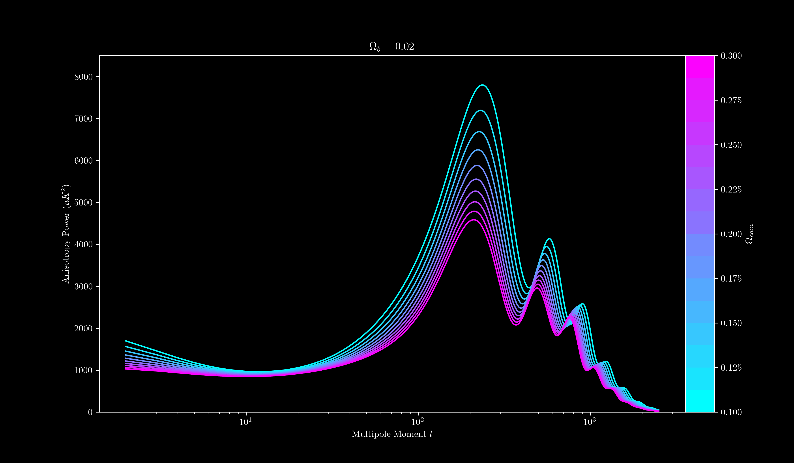
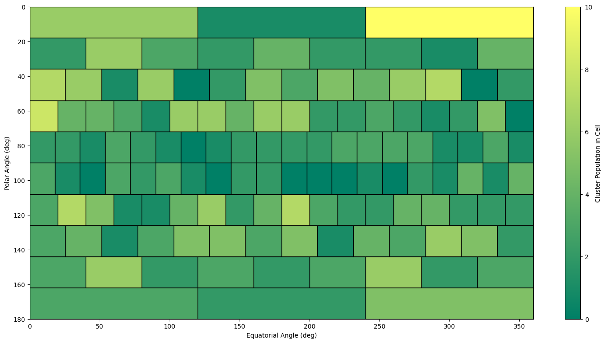
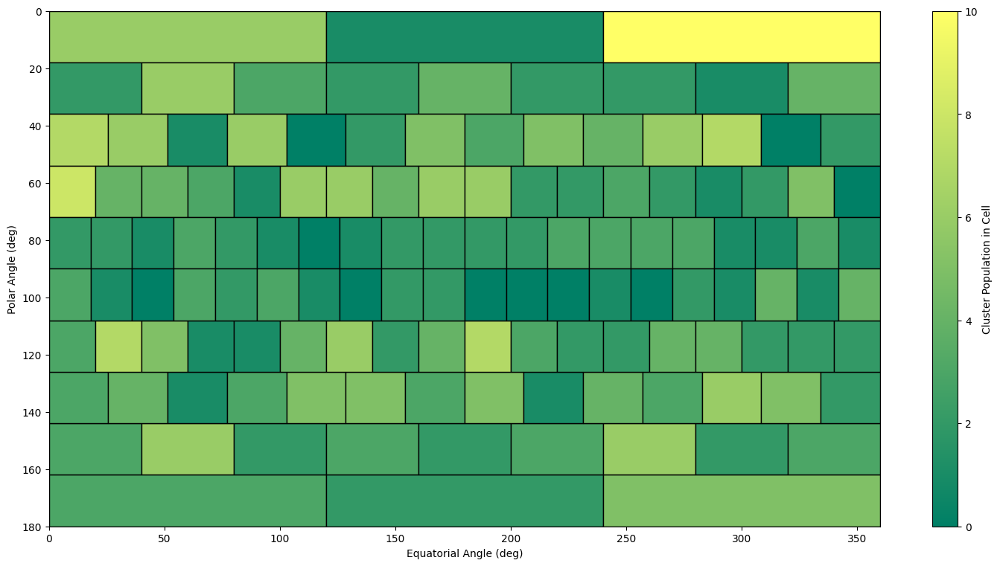

Data Visualisation From My Studies
I did a double degree in Science and Mathematics, majoring in Physics and Applied Mathematics. As part of that, you make a fair few plots!
One of the most versatile tools in an astronomer's toolbox is Markov Chain Monte Carlo. This is a way to infer the optimal parameters given a model to fit to some data, while simultaneously recovering your uncertainties in your parameter values. How this works is you have a series of 'walkers' which move around your parameter space and evaluate your model fit to the data given those parameters (below animation, bottom right panel). The walkers tend to move into regions of higher parameter likelihood, and so your 'spatial' density of parameter evaluations gives a posterior distribution for your parameter values (below animation, bottom left panels). Given enough steps, your mean or median posterior values gives you the best fit to your data (below animation, top panel).

I must have an affinity for animations, because my next visualisation to share shows how the power spectrum of the cosmic microwave background is sensitive to the baryonic and cold dark matter content of the Universe.
If we plot the same simulation as above, but look at the projected density of the dust from 3D space to 2D space (rather than a 2D slice), we see this:
You can immediately see that the dust formed is extremely 'fluffy' which matches closely real images that powerful telescopes have taken of these systems.
In a 3D hydrodynamics simulation with similar parameters, we produced an animation of the orbital evolution of the stars (this time a 2D density slice). This shows us how the conditions of dust formation change across the orbit.
 



{kind=link}
{kind=link}